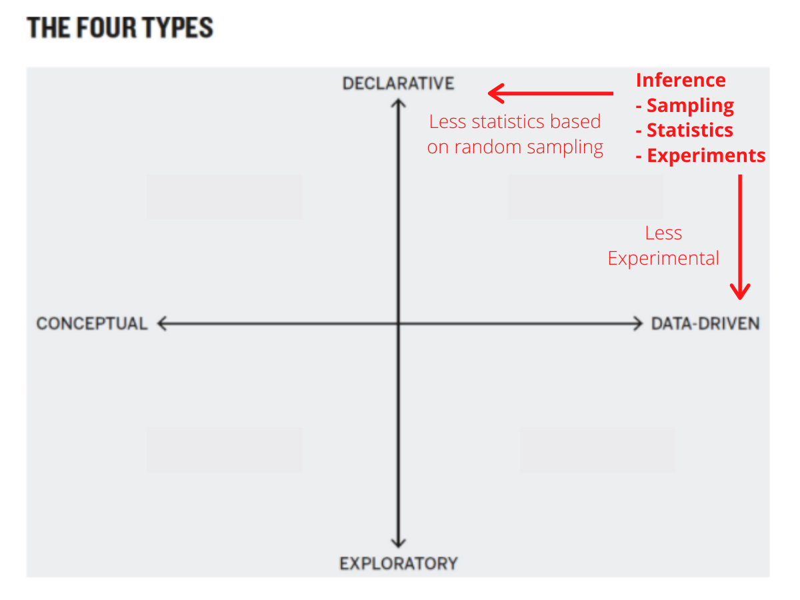

One million, six million, seventy million. Spoken or written, these numbers become a buszz. Incomprehensible. Presented graphically, they hit closer to the heart. As the Soviet losses climbed, I thought my browser had frozen. Surely the top of the column bust have been reached by now, I thought.
https://docs.google.com/spreadsheets/d/1MKIIJ6bi0tQSvSvqvbimGxy9TredQAUhd3XGTDl_QNQ/template/preview
https://byuistats.github.io/CSE150/ then under tools.
Connecting Inference to Good Charts

Who can explain hypothesis testing in 1-2 sentences?
Fisher published the fruit of his research in two seminal books, Statistical Methods for Research Workers and The Design of Experiments. The latter introduced several fundamental ideas, including the null hypothesis and statistical significance, that scientists worldwide still use today. And the first example Fisher used in his book—to set the tone for everything that followed—was Muriel Bristol’s tea test.